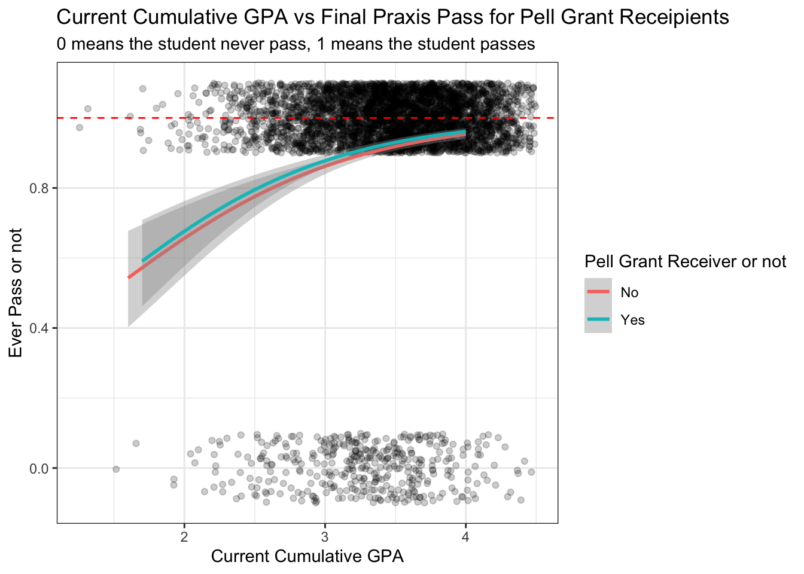
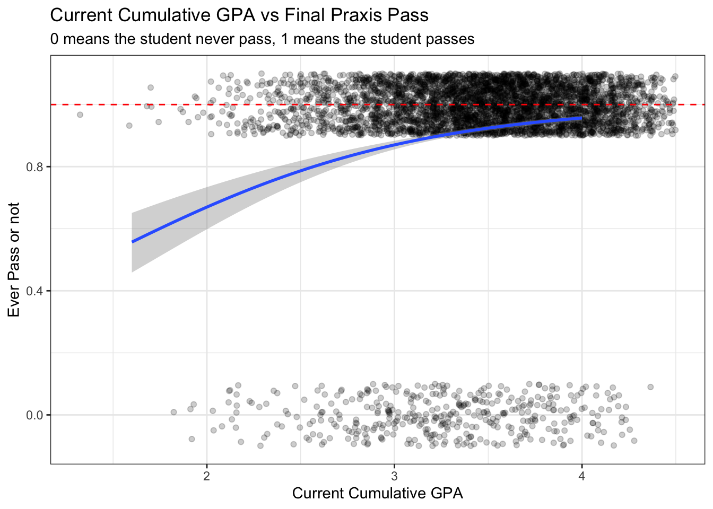

Logistic & Multiple Linear Regression Model for Praxis Scores
portfolio
Author
Alice Pao
Published
March 6, 2024
This post is to showcase my statistical analyses for praxis scores collected from students majoring in teacher education at an Idaho higher education institution. This project is part of Benjamin Pacini’s dissertation.
The two research questions we are trying to answer are: 1. What predicts strong teaching? 2. How do measures of success correlate with each other?
In the attempt to answer these two questions, I run logistic and multiple linear regression models using the praxis data set I got. (for its data cleaning and transformation process, please refer to my other blog post)
What Predicts Strong Teaching?
For the following regression models, the target(y) will be different results for praxis scores and the features(x) will be different student demographics.
Regression 1: Target is if a student ever pass praxis test. 0 means fail and 1 means pass.
In total, we have 4695 student subjects. 401 students never passed their praxis tests while 4228 students eventually passed praxis. We have 66 students didn’t indicate whether they passed praxis or not. In all the models I ran, these NAs were omitted.
Does Current Cumulative College GPA predict if a student eventually passes praxis test or not?
For this model, I set to be 0.05. The following is the result of the model. We see that the p-value for Current Cumulative GPA variable is smaller than 0.05. Therefore, we can make an inference that current cumulative GPA is somewhat useful when it comes to predicting if a student can pass praxis test or not. However, since the AIC score for this model is 2628, it means that this model isn’t the most accurate.
# 1: Logistic Regression Model # Logistic Regression Model: Ever Pass vs CurrentCumGPApraxis_ever_pass <- praxis %>%select(student_id, ever_pass) %>%mutate(student_id =as.character(student_id))praxis_ever_pass <-inner_join(praxis_ever_pass, demo, by =c("student_id"="StudentID"))praxis_ever_pass <- praxis_ever_pass %>%relocate(ever_pass, .before ="student_id") %>%unique()glm_ever_pass_gpa <-glm(ever_pass ~ CurrentCumGPA, data = praxis_ever_pass, family = binomial)summary(glm_ever_pass_gpa) %>% pander::pander()
Estimate
Std. Error
z value
Pr(>|z|)
(Intercept)
-1.684
0.3814
-4.415
1.012e-05
CurrentCumGPA
1.195
0.1148
10.41
2.238e-25
(Dispersion parameter for binomial family taken to be 1 )
Null deviance:
2728 on 4628 degrees of freedom
Residual deviance:
2624 on 4627 degrees of freedom
Code
ggplot(data = praxis_ever_pass, aes(x=CurrentCumGPA, y = ever_pass))+geom_point()+geom_smooth(method ="glm", method.args=list(family=binomial), se=FALSE)+theme_bw()+labs(title ="Current Cumulative GPA vs Final Praxis Pass", subtitle ="0 means the student never pass, 1 means the student passes", y ="Ever Pass or not", x ="Current Cumulative GPA" )
Does Current Cumulative College GPA by Ethnicity predict if a student eventually passes praxis test or not?
For this model, I added Ethnicity to be another feature becuase I am curious if Ethnicity can contribute to the prediction. Again the AIC score is 2639.4 which is too high (the lower the AIC score, the more fitted a model is)
Code
# Logistic Regression Model: Ever Pass vs CurrentCumGPA & Ethnicityglm_ever_pass_ethnicity <-glm(ever_pass ~ CurrentCumGPA*Ethnicity, data = praxis_ever_pass, family = binomial)summary(glm_ever_pass_ethnicity) %>% pander::pander()
Table continues below
Estimate
Std. Error
z value
(Intercept)
2.269
5.684
0.3991
CurrentCumGPA
4.644e-13
1.662
2.794e-13
EthnicityAsian
-6.041
6.259
-0.9652
EthnicityBlack
-1.197
7.094
-0.1687
EthnicityHawaiian, Pacific Island
-1.998
9.631
-0.2074
EthnicityHispanic, Latino
-2.881
5.795
-0.4971
EthnicityOther
-5.383
9.966
-0.5402
EthnicityTwo or More Ethnicities
-3.587
6.147
-0.5836
EthnicityUnknown
-6.696
6.397
-1.047
EthnicityWhite
-3.958
5.7
-0.6944
CurrentCumGPA:EthnicityAsian
1.593
1.83
0.8705
CurrentCumGPA:EthnicityBlack
0.1923
2.1
0.09157
CurrentCumGPA:EthnicityHawaiian, Pacific Island
0.5616
2.815
0.1995
CurrentCumGPA:EthnicityHispanic, Latino
0.7103
1.698
0.4183
CurrentCumGPA:EthnicityOther
1.587
2.881
0.5508
CurrentCumGPA:EthnicityTwo or More Ethnicities
1
1.816
0.5509
CurrentCumGPA:EthnicityUnknown
1.826
1.883
0.9695
CurrentCumGPA:EthnicityWhite
1.223
1.667
0.7333
Pr(>|z|)
(Intercept)
0.6898
CurrentCumGPA
1
EthnicityAsian
0.3344
EthnicityBlack
0.866
EthnicityHawaiian, Pacific Island
0.8357
EthnicityHispanic, Latino
0.6191
EthnicityOther
0.5891
EthnicityTwo or More Ethnicities
0.5595
EthnicityUnknown
0.2952
EthnicityWhite
0.4875
CurrentCumGPA:EthnicityAsian
0.384
CurrentCumGPA:EthnicityBlack
0.927
CurrentCumGPA:EthnicityHawaiian, Pacific Island
0.8419
CurrentCumGPA:EthnicityHispanic, Latino
0.6757
CurrentCumGPA:EthnicityOther
0.5817
CurrentCumGPA:EthnicityTwo or More Ethnicities
0.5817
CurrentCumGPA:EthnicityUnknown
0.3323
CurrentCumGPA:EthnicityWhite
0.4634
(Dispersion parameter for binomial family taken to be 1 )
Null deviance:
2728 on 4628 degrees of freedom
Residual deviance:
2603 on 4611 degrees of freedom
Code
ggplot(data = praxis_ever_pass, aes(x=CurrentCumGPA, y = ever_pass))+geom_point()+geom_smooth(method ="glm", method.args=list(family=binomial), se=FALSE, aes(color =Ethnicity))+theme_bw()+labs(title ="Current Cumulative GPA vs Final Praxis Pass by Student's Ethnicity", subtitle ="0 means the student never pass, 1 means the student passes", y ="Ever Pass or not", x ="Current Cumulative GPA" )
Code
# Logistic Regression Model: Ever Pass vs CurrentCumGPA & isMaleglm_ever_pass_male <-glm(ever_pass ~ CurrentCumGPA*isMale, data = praxis_ever_pass, family = binomial)ggplot(data = praxis_ever_pass, aes(x=CurrentCumGPA, y = ever_pass))+geom_point()+geom_smooth(method ="glm", method.args=list(family=binomial), se=FALSE, aes(color =as.factor(isMale)))+theme_bw()+labs(title ="Current Cumulative GPA vs Final Praxis Pass by Gender", subtitle ="0 means the student never pass, 1 means the student passes", y ="Ever Pass or not", x ="Current Cumulative GPA", color ="Gender")+scale_color_discrete(breaks=c("0", "1"),labels=c("Female", "Male"))
Code
# Logistic Regression Model: Ever Pass vs ACTSAT_Scoresglm_ever_pass_ACTSAT <-glm(ever_pass ~ ACTSAT_Scores, data = praxis_ever_pass, family = binomial)ggplot(data = praxis_ever_pass, aes(x=ACTSAT_Scores, y = ever_pass))+geom_point()+geom_smooth(method ="glm", method.args=list(family=binomial), se=FALSE)+theme_bw()+labs(title ="Self-Reported ACT and SAT Score vs Final Praxis Pass", subtitle ="0 means the student never pass, 1 means the student passes", y ="Ever Pass or not", x ="ACT or SAT Score")

Code
# Logistic Regression Model: Ever Pass vs ACTSAT_Scores & Ethnicityglm_ever_pass_ACTSAT_ethnicity <-glm(ever_pass ~ ACTSAT_Scores*Ethnicity, data = praxis_ever_pass, family = binomial)ggplot(data = praxis_ever_pass, aes(x=ACTSAT_Scores, y = ever_pass))+geom_point()+geom_smooth(method ="glm", method.args=list(family=binomial), se=FALSE, aes(color = Ethnicity))+theme_bw()+labs(title ="Self-Reported ACT and SAT Score vs Final Praxis Pass by Ethnicity", subtitle ="0 means the student never pass, 1 means the student passes", y ="Ever Pass or not", x ="ACT or SAT Score", color ="Ethnicity")

Code
# Logistic Regression Model: Ever Pass vs ACTSAT_Scores & isMaleglm_ever_pass_ACTSAT_male <-glm(ever_pass ~ ACTSAT_Scores*isMale, data = praxis_ever_pass, family = binomial)ggplot(data = praxis_ever_pass, aes(x=ACTSAT_Scores, y = ever_pass))+geom_point()+geom_smooth(method ="glm", method.args=list(family=binomial), se=FALSE, aes(color =as.factor(isMale)))+theme_bw()+labs(title ="Self-Reported ACT and SAT Score vs Final Praxis Pass by Gender", subtitle ="0 means the student never pass, 1 means the student passes", y ="Ever Pass or not", x ="ACT or SAT Score", color ="Gender")+scale_color_discrete(breaks=c("0", "1"), labels =c("Female", "Male"))
Code
# Logistic Regression Model: Ever Pass vs CurrentCumGPA & ReceivedPellglm_ever_pass_pell <-glm(ever_pass ~ CurrentCumGPA*ReceivedPell, data = praxis_ever_pass, family = binomial)ggplot(data = praxis_ever_pass, aes(x=CurrentCumGPA, y = ever_pass))+geom_point()+geom_smooth(method ="glm", method.args=list(family=binomial), se=FALSE, aes(color =as.factor(ReceivedPell)))+theme_bw()+labs(title ="Current Cumulative GPA vs Final Praxis Pass for Pell Grant Receivers", subtitle ="0 means the student never pass, 1 means the student passes", y ="Ever Pass or not", x ="Current Cumulative GPA", color ="Pell Grant Receiver or not")+scale_color_discrete(breaks=c("0", "1"), labels =c("No", "Yes"))
Code
# Logistic Regression Model: Ever Pass vs ACTSAT_Scores & ReceivedPellglm_ever_pass_pell_act <-glm(ever_pass ~ ACTSAT_Scores*ReceivedPell, data = praxis_ever_pass, family = binomial)ggplot(data = praxis_ever_pass, aes(x=ACTSAT_Scores, y = ever_pass))+geom_point()+geom_smooth(method ="glm", method.args=list(family=binomial), se=FALSE, aes(color =as.factor(ReceivedPell)))+theme_bw()+labs(title ="Self-Reported ACT and SAT Score vs Final Praxis Pass for Pell Grant Receipients", subtitle ="0 means the student never pass, 1 means the student passes", y ="Ever Pass or not", x ="ACT or SAT Score", color ="Pell Grant Receiver or not")+scale_color_discrete(breaks=c("0", "1"), labels =c("No", "Yes"))
Regression 2: Target is a student’s first attempt praxis z score
Regression 3: Target is a student’s last attempt praxis z score
Regression 4: Target is a student’s last attempt score points from the state’s passing standard